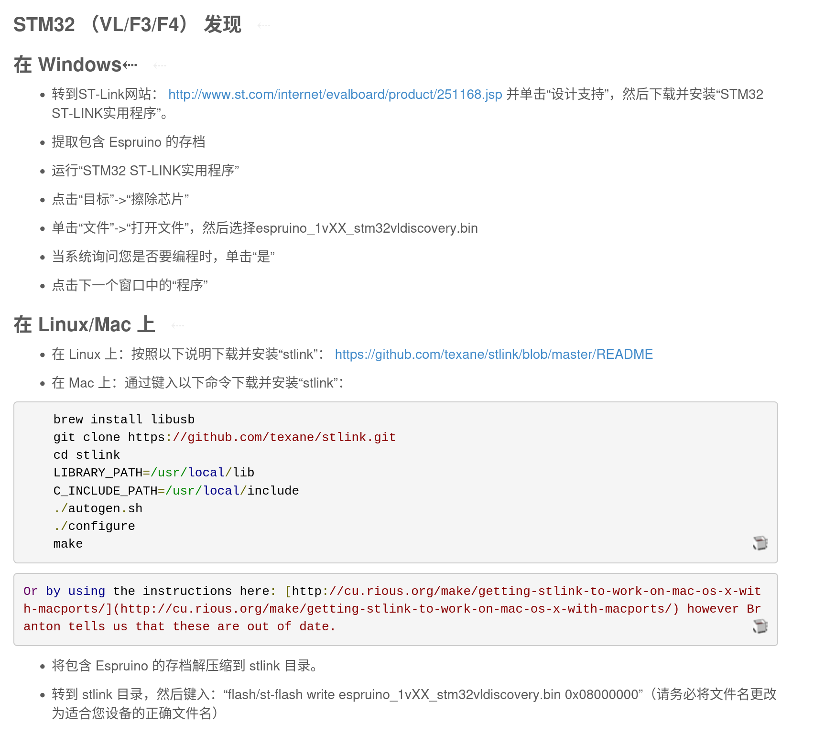

espruino
前言 之前就想学一点物联网相关的东西 (
从零开始学习嵌入式-尝试 )，但限于知识水平的不足，以及 rust 确实比较复杂，学了一点就没继续了。
最近了解到了
https://www.espruino.com/ 这是使用 js 来进行编程的物联网平台，我又有信心了，而且据网上消息可以使用 esp8266 的单片机,这款价格只有十几元到二十几元非常便宜却支持 wifi 的板子，实在是给了我很大的期望。
开始烧录固件&连接 esprunio 是需要先将固件写到板子中，然后才可以动态加载 js 代码执行。
在刷好固件后自动就配对了，但换电脑就需要重新刷配对一次（todo 寻找简单配对的方法）
esp8266 NodeMcu 烧录与连接 这块板子足够的便宜，花了12元就买了一块，芯片是 esp12-f ，150Kib ram (
64KB 的 iRAM，96KB 的 dRAM espruino 中不需要了解这两个的区别，可以理解为有大概120Kib的ram供我们的代码使用，其他空间被 espruino占用了 ) 和 4mb 闪存。
log
error: externally-managed-environment
× This environment is externally managed
╰─> To install Python packages system-wide, try apt install
python3-xyz, where xyz is the package you are trying to
install.
If you wish to install a non-Debian-packaged Python package,
create a virtual environment using python3 -m venv path/to/venv.
Then use path/to/venv/bin/python and path/to/venv/bin/pip. Make
sure you have python3-full installed.
If you wish to install a non-Debian packaged Python application,
it may be easiest to use pipx install xyz, which will manage a
virtual environment for you. Make sure you have pipx installed.
See /usr/share/doc/python3.11/README.venv for more information.
搞不懂 python 这一套，感觉它的版本很乱。按照下面的方法安装
创建一个虚拟环境并选择其名称，例如“esptoolenv”：python -m venv esptoolenv
在 Windows 上：esptoolenv\Scripts\activate (在创建虚拟环境的磁盘中)
在 Linux 或 MacOS 上：source esptoolenv/bin/activate
安装最新的 esptool.py活动虚拟环境中的版本：pip install esptool
您现在可以在此虚拟环境中使用它，而不会影响您的系统范围的安装：esptool.py <command>
当你使用完后 esptool.py，停用虚拟环境： deactivate 。 通过再次激活环境可以重复使用。
如果您不再需要虚拟环境，可以通过删除 esptoolenv 目录。
bash
esptool.py --port /dev/ttyUSB0 --baud 115200 write_flash --flash_freq 80m --flash_mode qio --flash_size 4MB 0x0000 "boot_v1.6.bin" 0x1000 espruino_esp8266_user1.bin 0x3FC000 esp_init_data_default.bin 0x3FE000 blank.bin
bash
esptool --port COM7 --baud 115200 write_flash --flash_freq 80m --flash_mode qio --flash_size 4MB 0x0000 "boot_v1.6.bin" 0x1000 espruino_esp8266_user1.bin 0x3FC000 esp_init_data_default.bin 0x3FE000 blank.bin
js
esptool.py --port [/dev/ttyUSB0|COM1] --baud 115200 erase_flash
提示要添加用户组，添加后重启电脑就能运行了，其中 flash_size 官网填的是 32m 但我运行报错， 改成 4MB （4*8=32mbit）后就可以了。/dev/ttyUSB0 是插入的单片机串口名。
设置 Baud Rate 到9600（我这块板子标得是9600，我看网上其他教程是115200 ）
连接后我这里提示 Unable to retrieve board information. Connection Error? 也无法发送代码过去，然后看到这篇帖子：https://forum.espruino.com/conversations/318073/ 中提及波特率，我又改回 115200 连接成功（😮💨，板子后面的标识 9600 坑我
在无法读取板信息的情况下主动指定 http://www.espruino.com/json/
esp8266 01s 待办 这个我还没成功，espruino 也不建议使用 01s
我采取的usb ttl 和它进行连接，链接的对应关系是
esp8266 01 usb ttl
gnd gnd io0 gnd en 3.3v
其中烧录命令因为我的是1MB 闪存，所以使用下面这条，其他都一样
js
esptool --port COM7 --baud 115200 write_flash --flash_freq 40m --flash_mode dio --flash_size 1MB 0x0000 "boot_v1.6.bin" 0x1000 espruino_esp8266_user1.bin 0xFC000 esp_init_data_default.bin 0xFE000 blank.bin
js
esptool.py --port /dev/ttyUSB0 --baud 115200 \
write_flash --flash_freq 40m --flash_mode qio --flash_size 4m \
0x0000 "boot_v1.6.bin" 0x1000 espruino_esp8266_user1.bin \
0x7C000 esp_init_data_default.bin 0x7E000 blank.bin
stm32f3

途中 linux 的链接也失效了（悲惨），widnows 的则让人愤怒，st 公司的下载让人恶心。
linux 安装后可以使用命令 st-info 可以看到一些辅助信息
下载对应固件 ，看上图得知我的 stm32f3 是选择 stm32 vl discovery 的。
打开 gui 界面，选择固件，点击勾勾然后点击红点就进行烧录了。
然后按照这装了个驱动，感觉不到有没有起效： http://www.espruino.com/Quick+Start+USB
再安装 npm install -g espruino ： https://github.com/espruino/EspruinoTools
然后，我就没有办法操控了，上传代码说成功了，但无法操控led，唉 等 esp8266 到了再试试吧，这个也不知道是啥问题。
espruino + typescript + vscode 可以安装该 npm包到全局使用 npm install -g espruino
在终端运行 espruino -b 115200 即可连接
现在可以直接在终端repl 输入代码运行，我创建了一个初始项目，配置好了typescript以及压缩和发送代码等功能。
在 espruino 上 js 代码可以存储在 闪存 | 内存 | 网络, 固件会自动加载 Storage 中的代码然后运行
对于内存中的代码可以使用 save() 来保存到闪存中（我不建议，因为它会保存变量状态，这更类似于休眠操作，看起来很美好，但实际上增加心栈负担）save() 存储的代码在 Storage 中的 .varimg 中，应该是经过二进制压缩的。
我将代码存储在闪存中（Storage 中的 .bootcde），4mb的空间还是绰绰有余的，但内存就比较珍贵了。
esp8266 NodeMcu 单片机文档 ： https://docs.ai-thinker.com/esp8266/boards/nodemcu
通过 gpio 控制电机 在烧毁几个三极管后我决定去找个仿真软件尝试，
电路仿真网页版 。最终得出了上图的接法。
这里我采用的是 PNP 三极管，NPN的三极管接法略有不同。
GPIO 引脚的输出电流不够，而3v引脚的通断单片机又没有办法控制。所以需要使用另外的开关：三极管(继电器\MOS管)
其中限流电阻可以防止单片机以及三极管被烧毁，可以打开
电路原理图->立刻尝试 在右侧面板尝试限流电阻阻值过低会是什么情况，以及GPIO通过电压控制小灯的明暗。。
发现 espruino 有
它的文档 ，所以继续折腾一下。